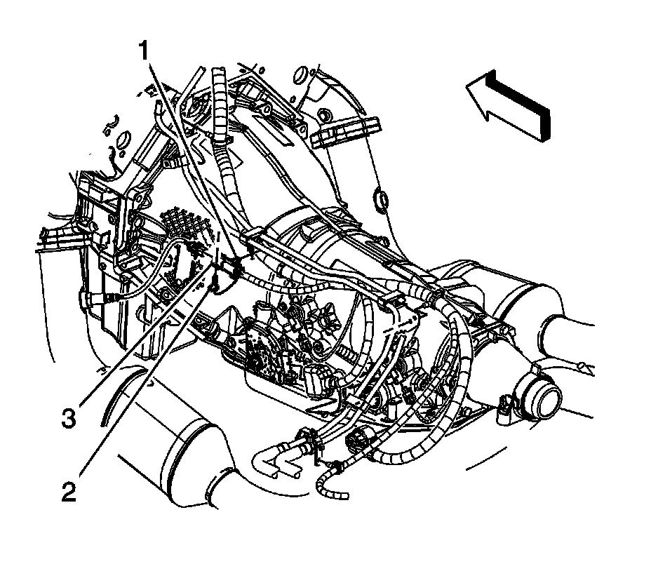
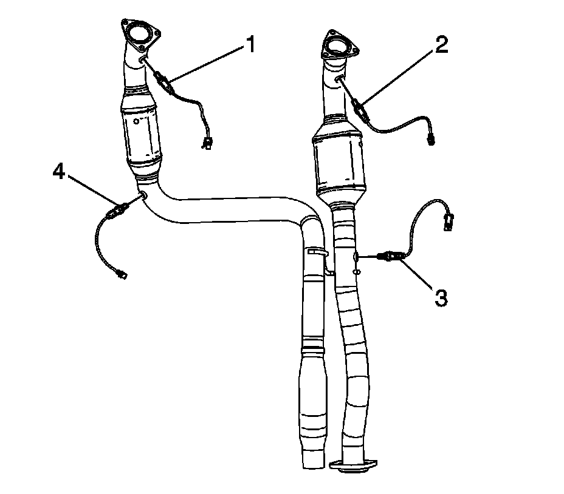

Heated Oxygen Sensor Replacement - Bank 1 Sensor 1 (2500 Series)
HEATED OXYGEN SENSOR REPLACEMENT - BANK 1 SENSOR 1 (2500 SERIES)
REMOVAL PROCEDURE
NOTE: Do not remove the pigtail from either the heated oxygen sensor (HO2S) or the oxygen sensor (O2S). Removing the pigtail or the connector will affect sensor operation.
Handle the oxygen sensor carefully. Do not drop the HO2S. Keep the in-line electrical connector and the louvered end free of grease, dirt, or other contaminants. Do not use cleaning solvents of any type.
Do not repair the wiring, connector or terminals. Replace the oxygen sensor if the pigtail wiring, connector, or terminal is damaged.
This external clean air reference is obtained by way of the oxygen sensor signal and heater wires. Any attempt to repair the wires, connectors, or terminals could result in the obstruction of the air reference and degraded sensor performance.
The following guidelines should be used when servicing the heated oxygen sensor:
- Do not apply contact cleaner or other materials to the sensor or vehicle harness connectors. These materials may get into the sensor causing poor performance.
- Do not damage the sensor pigtail and harness wires in such a way that the wires inside are exposed. This could provide a path for foreign materials to enter the sensor and cause performance problems.
- Ensure the sensor or vehicle lead wires are not bent sharply or kinked. Sharp bends or kinks could block the reference air path through the lead wire.
- Do not remove or defeat the oxygen sensor ground wire, where applicable. Vehicles that utilize the ground wired sensor may rely on this ground as the only ground contact to the sensor. Removal of the ground wire will cause poor engine performance.
- Ensure that the peripheral seal remains intact on the vehicle harness connector in order to prevent damage due to water intrusion. The engine harness may be repaired using Packard's Crimp and Splice Seals Terminal Repair Kit. Under no circumstances should repairs be soldered since this could result in the air reference being obstructed.

1. Raise and support the vehicle. Refer to Vehicle Lifting.
2. Unbolt the front propeller shaft from the front differential, if equipped with four wheel drive (4WD). Refer to Front Propeller Shaft Replacement.
3. Remove the connector position assurance (CPA) retainer (2).
4. Disconnect the HO2S electrical connector from the engine wiring harness electrical connector (3).
5. NOTE: Refer to Excessive Force and Oxygen Sensor Notice.

Remove the HO2S (1).
INSTALLATION PROCEDURE
IMPORTANT: A special anti-seize compound is used on the HO2S threads. The compound consists of liquid graphite and glass beads. The graphite tends to burn away, but the glass beads remain, making the sensor easier to remove. New, or service replacement sensors already have the compound applied to the threads. If the sensor is removed from an exhaust component and if for any reason the sensor is to be reinstalled, the threads must have anti-seize compound applied before the reinstallation.
1. If reinstalling the old sensor, coat the threads with anti-seize compound GM P/N 12377953, or equivalent.
NOTE: Refer to Component Fastener Tightening Notice.
2. Install the HO2S (1).
Tighten the sensor to 42 N.m (31 lb ft).
3. Connect the HO2S electrical connector to the engine wiring harness electrical connector (3).
4. Install the CPA retainer (2).
5. Install the front propeller shaft to the front differential, if equipped with 4WD.
6. Lower the vehicle.